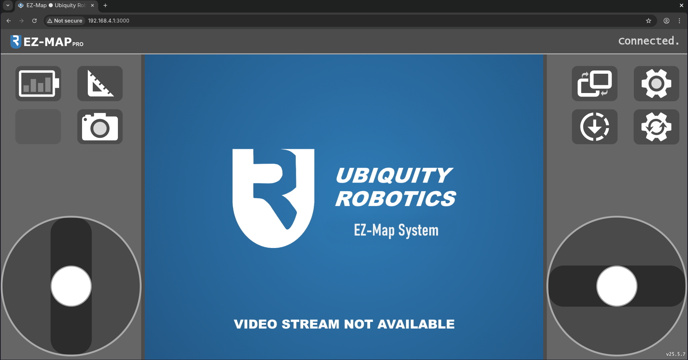

Driving the robot through EZ-Map
To drive the robot using the EZ-Map web application you should follow the steps:
Ensure that you are connected to the robot, check Connecting to the Robot for details. Write down the robot’s IP, as you will need it to connect to EZ-Map.
Ensure the robot’s wheels are locked, meaning you are not able to manually push the robot around.
The EZ-Map web application should be accessible through the browser by typing in the address:
http://<ROBOT-IP>:3000
Warning
Place the robot on the ground before driving to prevent it from falling off a table.
Our robots are meant to be table-top robots and we take measures against this, however the risk is always there.
In the images above you can see how EZ-Map looks like. You will either see:
Two joysticks, when connecting from a computer or phone in landscape mode.
Use the left joystick to move the robot forwards and backwards. Use the right joystick to rotate the robot.
Dedicated buttons for all directions, when connecting from a phone in portrait mode.
{kind=link}
Congratulations!
You have successfully driven the robot using EZ-Map. To learn more about the features of EZ-Map, see: Introduction to EZ-Map.